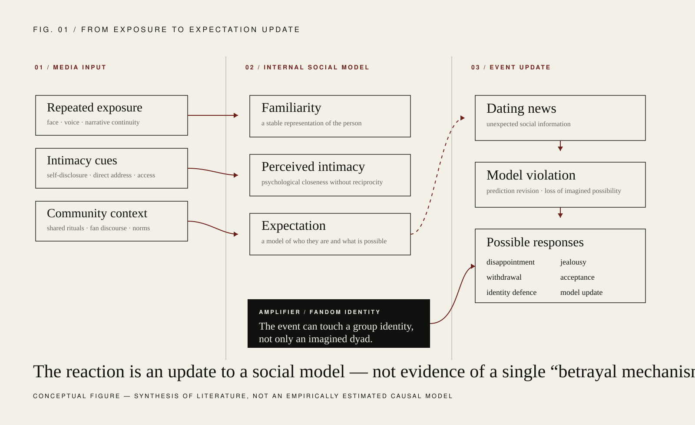

Why can news about a person we have never met produce disappointment, jealousy or even a sense of betrayal? The useful scientific question is not whether the reaction is “too much.” It is which ordinary social mechanisms are being recruited by an unusual media environment.
01Familiarity can become socially meaningful.
Repeated exposure to a face, voice, personality and personal narrative can create a stable sense of familiarity. Humans do not need reciprocal friendship for a person to occupy a meaningful place in memory, prediction and emotion.
Parasocial relationships are therefore better understood as one-sided social representations built from normal cognitive ingredients rather than as a separate or pathological category of attachment.

02Betrayal is partly a prediction error.
Fans build expectations about who an idol is, how accessible that person seems and what kinds of relationships are imaginable. Dating news can violate that model. The resulting emotion may reflect not only jealousy but also the abrupt revision of a familiar social narrative.
03Identity amplifies the event.
Fandom is also social identity. The idol can become linked to friendships, routines, aesthetics and a sense of belonging. A change in the idol's public relationship status can therefore disturb more than an imagined dyad; it can touch a broader identity structure.
04What remains unknown?
The mechanisms above are plausible and individually well grounded, but their relative contribution to real-world idol dating reactions is not yet precisely quantified. The strongest version of HUMAN should distinguish established social mechanisms from interpretation of a specific cultural phenomenon.